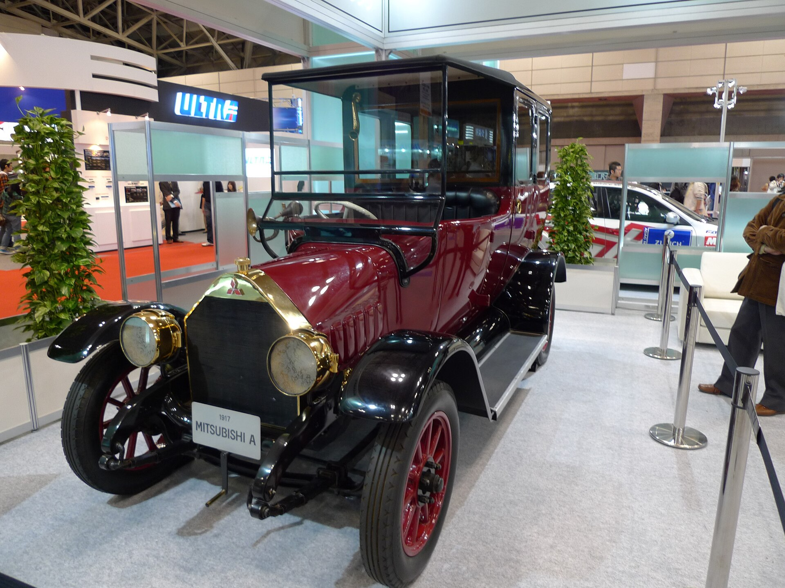

דמויות היסוד: יאטרו איוואסאקי וקויאטה איוואסאקי
יאטרו איוואסאקי, 1835–1885, היה מייסד קבוצת מיצובישי המקורית. הוא החל בתחום הספנות בתקופת המודרניזציה של יפן, ובנה תשתית עסקית שהתרחבה בהמשך לבנקאות, מכרות, תעשייה כבדה, מסחר והנדסה. לכן מיצובישי אינה מותג רכב שנולד ממוסך קטן, אלא מענף בתוך קונצרן תעשייתי עצום.
קויאטה איוואסאקי, 1879–1945, היה מן הדמויות החשובות בדור מאוחר יותר של משפחת איוואסאקי. בתקופתו התרחבו יכולות ההנדסה והתעשייה של הקבוצה. גם אם Mitsubishi Motors כחברה עצמאית נוסדה רק ב־1970, שורשי הרכב שלה נטועים בתוך המערכת התעשייתית שהקימה משפחת איוואסאקי.
מקור השם והסמל
Mitsubishi מורכב מן המילים היפניות mitsu, כלומר שלוש, ו־hishi או bishi, שמשמעותה מעוין או יהלום. מכאן סמל שלושת היהלומים. הסמל משלב זיכרון משפחתי ותאגידי, והפך לאחד הסימנים המזוהים ביותר בתעשייה היפנית.
מה היה לפני המכונית?
לפני הרכב היו ספנות, תעשייה כבדה, מכונות, הנדסה וייצור. הידע הזה חשוב להבנת מיצובישי: החברה נכנסה לרכב מתוך ניסיון בבניית מערכות מורכבות, לא רק מתוך שוק צרכני של מכוניות פרטיות.
הדגם המכונן: Mitsubishi Model A
Model A משנת 1917 נחשב לאחד הניסיונות המוקדמים לייצר מכונית נוסעים ביפן. הייצור היה ידני ויקר, ולכן הדגם לא היה הצלחה מסחרית רחבה. אך חשיבותו היסטורית: הוא הראה כי תעשייה יפנית יכולה להתמודד עם טכנולוגיה מורכבת של רכב בתקופה שבה השוק נשלט בעיקר בידי יצרנים מערביים.

מיצובישי מוטורס כחברה עצמאית
Mitsubishi Motors Corporation הוקמה בשנת 1970 כגוף רכב עצמאי יותר בתוך מערכת מיצובישי. זהו רגע חשוב משום שהוא מפריד בין פעילות הרכב לבין הקונצרן התעשייתי הרחב, ומאפשר להבין את המותג כיצרן רכב בעל זהות משלו.
רכבי שטח, ראלי וזהות מכנית
מיצובישי התפרסמה במיוחד בזכות Pajero, Lancer Evolution ו־Delica. Pajero קישר את החברה לעולם השטח והדקאר. Lancer Evolution חיבר אותה לעולם הראלי, הנעה כפולה, טורבו ושליטה מכנית. אלה אינם רק דגמים; הם יצרו סביב החברה קהילה של חובבי נהיגה ושטח.
מורשת וביקורת
המורשת של מיצובישי היא הנדסית ומעט קשוחה: כלי רכב שמדגישים יכולת, שטח ומכניקה. עם זאת, החברה חוותה משברים, ירידה בתדמית ותלות גוברת בשיתופי פעולה. ההיסטוריה שלה מראה כיצד קונצרן תעשייתי גדול יכול להוליד מותג רכב מרתק, אך לא תמיד יציב מבחינה מסחרית.